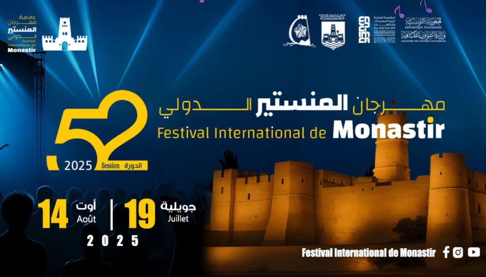

Tout ce qui se passe à Monastir — découvertes, événements et offres
exclusives de la ville.
📍 Monastir, Tunisie
Nouveau : Café Médina ouvre Rue de l'Indépendance, MonastirFestival des Saveurs — Ribat de Monastir, 15 Mars 2025Promo : -20% visites guidées du Ribat ce weekendOuverture : Boulangerie Artisanale Bled, Monastir CentreAtelier pêche traditionnelle au port de Monastir — inscriptions
ouvertesNuit des Musées : le Ribat en nocturne — 29 MarsNouveau : Café Médina ouvre Rue de l'Indépendance, MonastirFestival des Saveurs — Ribat de Monastir, 15 Mars 2025Promo : -20% visites guidées du Ribat ce weekendOuverture : Boulangerie Artisanale Bled, Monastir CentreAtelier pêche traditionnelle au port de Monastir — inscriptions
ouvertesNuit des Musées : le Ribat en nocturne — 29 Mars

✦ À la Une — Monastir
Le Festival international de Monastir
3 jours de fête et de musique au pied du Ribat de Monastir !
Vos chanteurs préférés sont sur scène pour vous faire vibrer.
Bienvenue à tous !!! 🎤